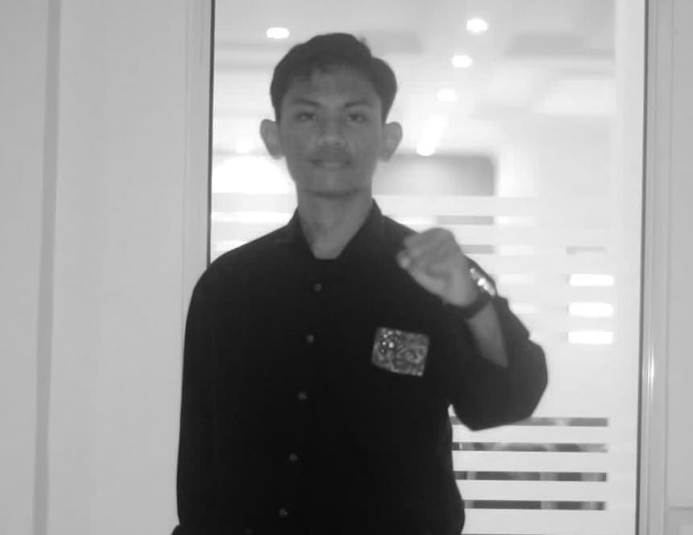

Awas Serangan Fajar
Menyambut momentum Pemilihan Umum (PEMILU) pada tahun 2024 mendatang, masih banyak politikus yang mencoba merusak jalannya proses demokrasi dan menyuburkan korupsi. Para calon yang tidak meyakini program dalam kampanye seringkali melakukan politik uang untuk dapat memenangkan kontestasi dalam PEMILU.
Salah satu praktik yang sering menjadi perbincangan di masa tenang pemilu adalah politik uang dalam bentuk yang disebut "Serangan Fajar". Istilah ini digunakan untuk menyebut politik uang menjelang PEMILU.
Kurangnya pemahaman beberapa masyarakat terkait serangan fajar merupakan masalah. Selain rendahnya pemahaman, masyarakat yang menerima serangan fajar biasanya adalah masyarakat dengan ekonomi menengah ke bawah, yang menjadi faktor besar mengapa mereka masih mau menerima serangan fajar tersebut.
Padahal, dampak dari menerima serangan fajar sangat besar. Memilih pemimpin yang melakukan serangan fajar akan melahirkan pemimpin yang mungkin akan menjadi bibit awal korupsi. Kandidat yang berhasil menduduki kursi pemilu melalui praktik politik uang cenderung akan menyalahgunakan anggaran daerah untuk pembangunan infrastruktur ataupun pelayanan publik guna mengembalikan modal yang telah mereka keluarkan.
Akibatnya, perbaikan infrastruktur dan pelayanan publik akan terganggu karena banyak pejabat yang menyalahgunakan anggaran untuk kepentingan individu atau golongan mereka sendiri.
Penulis berharap masyarakat dapat lebih bijaksana dalam memilih pemimpin daerah agar ke depannya akan lebih maju, tentram, bebas dari pemimpin yang korup, tidak amanah, dan menyepelekan kepercayaan masyarakat.
Penulis: Muhammad Ary Kurniawan Saputra